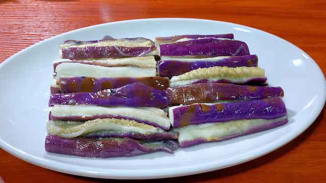

茄子（矮瓜）
富含膳食纤维、钾；紫皮茄子的皮有花青素，不用去皮。
挑选
软硬适中，轻轻按有弹性，松手能回弹。处理 特别吸油
- 切好后，加少量盐腌制15分钟，挤掉析出的水；
- 中小火干煸烘软、或者蒸软，再回锅搭配煎、炒，不再吸油。
肉末蒸茄子
食材：茄子、肉末、蒜蓉、葱花、油、盐、生抽、蚝油、味精。
- 茄子切成两段，上锅蒸煮8分钟，蒸熟；
- 蒸熟的茄子放凉后，撕成条状；
- 炒肉末酱汁，勾一层薄芡，淋到茄子上，完成。
也可以炒肉末酱汁完成后，倒入蒸好的茄子，炒匀入味，再来一层薄芡。
